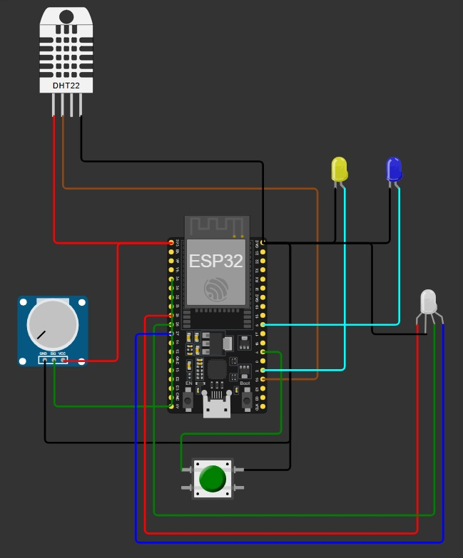
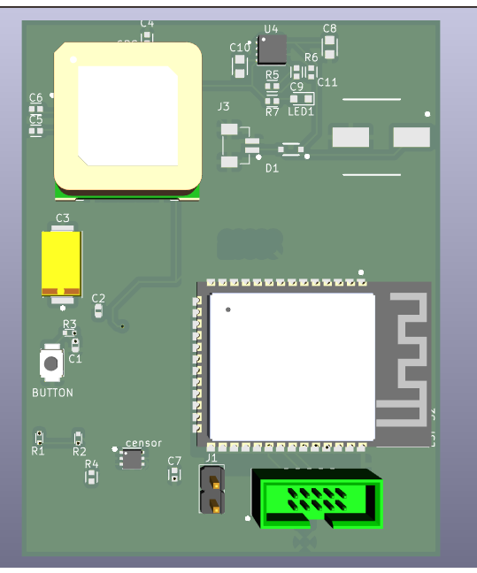

Preparação: identificar o local mais adequado entre o baú da carga e a cabine do caminhão para a instalação do sistema.
Perfuração: realizar um pequeno furo na estrutura para permitir a passagem do cabo do sensor de temperatura.
Fixação dos suportes: instalar suportes de fixação em ambos os lados da estrutura, sendo um na parte externa e outro na parte interna do baú.
Instalação externa: o dispositivo principal deve ser fixado no suporte externo.
Passagem do cabo: o cabo do sensor deve passar pelo furo realizado, conectando a parte externa à interna do baú.
Instalação interna: o sensor de temperatura deve ser fixado no suporte interno previamente instalado.
Finalização: garantir que todas as conexões estejam firmes e que o sistema esteja protegido contra movimentações e vibrações durante o transporte.
Montagem do Circuito
Simulação do circuito do dispositivo utilizando a plataforma Wokwi.

PCB do dispositivo

Componentes do Dispositivo
ESP32 Wi-Fi/Bluetooth (DOIT DevKit): responsável pelo controle geral do sistema, processamento dos dados e envio das informações via internet.
Módulo GPS GY-NEO6MV2: utilizado para obter a localização em tempo real da carga durante o transporte.
Sensor de temperatura DHT11: realiza a medição da temperatura interna do baú da carga.
LED de conexão: indica o status de conexão do dispositivo com a rede.
LED de funcionamento: indica se o dispositivo está ligado ou desligado.
LED RGB: utilizado para indicar o nível de bateria do dispositivo.
Botão liga/desliga: permite o acionamento manual do sistema.
Alimentação por bateria: garante o funcionamento do dispositivo de forma autônoma durante o transporte.
Case plástica principal: Compartimento externo responsável por abrigar o ESP32, o módulo GPS e os demais circuitos eletrônicos, protegendo o sistema contra poeira, impactos e condições climáticas.
Case plástica interna para o sensor de temperatura: Compartimento menor instalado dentro do compartimento de carga, responsável por proteger o sensor de temperatura contra danos físicos, mantendo-o exposto ao ar interno para medições precisas.
Passagem de cabo vedada: Elemento utilizado para permitir a saída do cabo do sensor de temperatura da case principal, evitando entrada de água e poeira.
Suportes de fixação: Estrutura utilizada para fixar as cases ao veículo.